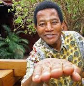

Filosofia
O Manilismo Baseia-se na real natureza do humana do ato que nos leva a procriar. Sexo move o mundo desde o principio da humanidade . O mundo está correlacionando com o homem . Tendo em vista que não podemos para de evoluir logo nos leva a varios raciocinios de "modus vivende", assim como algumas ideologias : Quem dispensa buraco e prefeitura . Maracujá , mara não mas CÚJÁ . Entre outras...